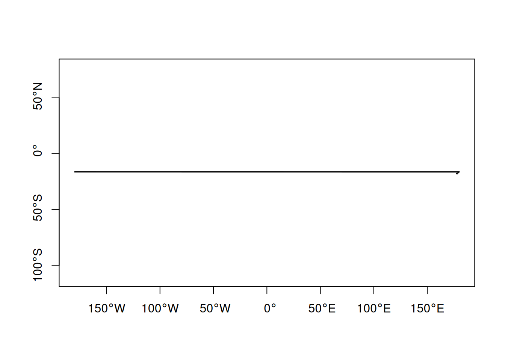

library(sf)
# Linking to GEOS 3.12.1, GDAL 3.8.4, PROJ 9.4.0; sf_use_s2() is TRUE
l <- st_as_sfc("LINESTRING(0 85,180 85)") %>%
st_segmentize(1) %>%
st_set_crs('EPSG:4326')
plot(st_transform(l, 'EPSG:3995'), col = 'red', lwd = 2,
graticule = TRUE, axes = TRUE, reset = FALSE)4 Spherical geometry
Exercise 4.1
Straight GeoJSON lines
How does the GeoJSON format define “straight” lines between ellipsoidal coordinates (section 3.1.1)? Using this definition of straight, how would LINESTRING(0 85,180 85) look like in a polar projection? How could this geometry be modified to have it cross the North Pole?
GeoJSON defines straight lines between pairs of ellipsoidal coordinates as the straight line in Cartesian space formed by longitude and latitude. This means e.g. that all parallels are straight lines.
Using this definition of straight, how would LINESTRING(0 85,180 85) look like in a polar projection?
Like a half circle:
How could this geometry be modified to have it cross the North Pole?
One would have to let it pass through (0 90) and (180, 90):
library(sf)
l <- st_as_sfc("LINESTRING(0 85,0 90,180 90,180 85)") %>%
st_segmentize(1) %>%
st_set_crs('EPSG:4326')
plot(st_transform(l, 'EPSG:3995'), col = 'red', lwd = 2,
graticule = TRUE, axes = TRUE, reset = FALSE)Exercise 4.2
For a typical polygon on \(S^2\), how can you find out ring direction?
Ring direction (clock-wise CW, counter clock-wise CCW) is unambiguous on \(R^2\) but not on \(S^2\): on \(S^2\) every polygon divides the sphere’s surface in two parts. When the inside of the polygon is taken as the area to the left when traversing the polygons’s points then for a small polygon, then ring direction is CCW if the area of the polygon is smaller than half of the area of the sphere. For polygons dividing the sphere in two equal parts (great circles such as the equator or meridians) ring direction is ambiguous.
Exercise 4.3
Are there advantages of using bounding caps over using bounding boxes? If so, list them.
Bounding caps may be more compact (have a smaller area compared to the bounding box corresponding to the same geometries), they need fewer parameters, and they are invariant under rotation of (the origins of) longitude and latitude.
For areas covering one of the poles, a bounding box will always need to have a longitude range that spans from -180 to 180, irrespective whether the geometry is centered around the pole.
Exercise 4.4
Why is, for small areas, the orthographic projection centered at the area a good approximation of the geometry as handled on \(S^2\)
Because that is the closest approximation of the geometry on \(R^2\).
Exercise 4.5
Fiji in rnaturalearth
For rnaturalearth::ne_countries(country = "Fiji", returnclass="sf"), check whether the geometry is valid on \(R^2\), on an orthographic projection centered on the country, and on \(S^2\). How can the geometry be made valid on S^2? Plot the resulting geometry back on \(R^2\). Compare the centroid of the country, as computed on \(R^2\) and on \(S^2\), and the distance between the two.
Valid on \(R^2\):
fi = rnaturalearth::ne_countries(country = "Fiji", returnclass="sf") %>%
st_geometry()
s2 = sf_use_s2(FALSE)
# Spherical geometry (s2) switched off
st_is_valid(fi)
# [1] TRUEValid on orthographic projection:
ortho = "+proj=ortho +lon_0=178.6 +lat_0=-17.3"
st_transform(fi, ortho) %>% st_is_valid()
# [1] TRUE
plot(st_transform(fi, ortho), border = 'red')The red line following the antimeridian makes the geometry invalid in this projection, and also on \(S^2\):
sf_use_s2(TRUE)
# Spherical geometry (s2) switched on
st_is_valid(fi)
# [1] TRUEMake valid on \(S^2\), and plot:
fi.s2 = st_make_valid(fi)
st_is_valid(fi.s2)
# [1] TRUE
plot(st_transform(fi.s2, ortho), border = 'red')
title("valid")where we see that the line at the antimeridian has disappeared. This makes plotting in \(R^2\) look terrible, with lines spanning the globe:
plot(fi.s2, axes = TRUE)
Compare the centroid of the country, as computed on \(R^2\) and on \(S^2\), and the distance between the two.
sf_use_s2(FALSE)
# Spherical geometry (s2) switched off
(c1 = st_centroid(fi))
# Warning in st_centroid.sfc(fi): st_centroid does not give correct
# centroids for longitude/latitude data
# Geometry set for 1 feature
# Geometry type: POINT
# Dimension: XY
# Bounding box: xmin: 163.8532 ymin: -17.31631 xmax: 163.8532 ymax: -17.31631
# Geodetic CRS: WGS 84
# POINT (163.8532 -17.31631)
sf_use_s2(TRUE)
# Spherical geometry (s2) switched on
(c2 = st_centroid(fi.s2))
# Geometry set for 1 feature
# Geometry type: POINT
# Dimension: XY
# Bounding box: xmin: 178.5684 ymin: -17.31562 xmax: 178.5684 ymax: -17.31562
# Geodetic CRS: WGS 84
# POINT (178.5684 -17.31562)
st_distance(c1, c2)
# Units: [m]
# [,1]
# [1,] 1561723
sf_use_s2(s2)Exercise 4.6
Consider dataset gisco_countries in R package giscoR, and select the country with NAME_ENGL == "Fiji". Does it have a valid geometry on the sphere? If so, how was this accomplished?
library(giscoR)
library(tidyverse) |> suppressPackageStartupMessages()
library(sf)
gisco_countries_2024 |> filter(NAME_ENGL == "Fiji") -> fiji
st_geometry(fiji) |> plot()This is not helpful.
st_bbox(fiji)
# xmin ymin xmax ymax
# -179.99999 -19.15896 179.99999 -12.45303This is more helpful: we see that xmax does not run until 180, but stops just before: the island crossing the antimeridian has been cut in two, and a small gap was created between the parts.